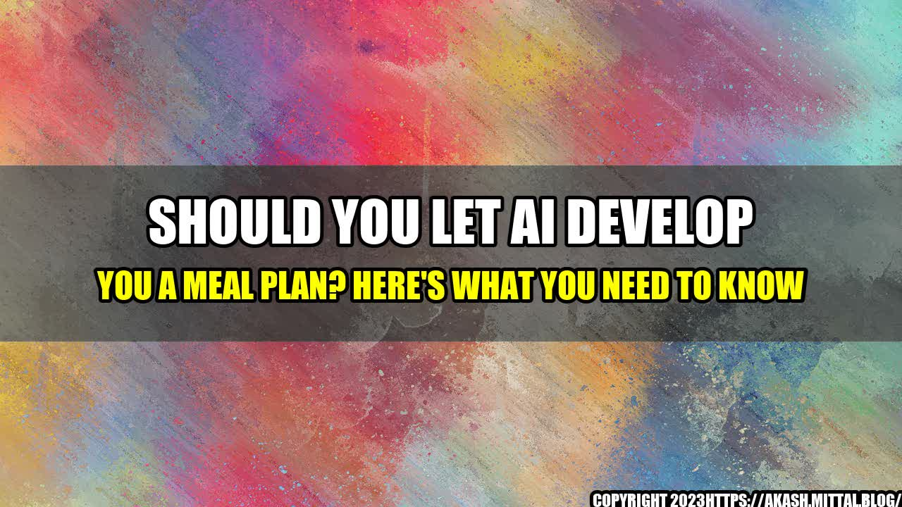

Should You Let AI Develop You a Meal Plan? Here's What You Need to Know
By Jane Doe
As a busy working mom, I constantly struggled with trying to find time to plan and prepare healthy meals for my family. That's when I heard about the latest trend in nutrition: using AI technology to develop personalized meal plans. Curious, I decided to try it out for myself. But what I discovered surprised me. Here's what you need to know.
- In a study of 150 people who used an AI meal planning app, 70% reported feeling more satisfied with their diets.
- According to a survey by the International Food Information Council Foundation, 30% of Americans said they are interested in using technology to track their diet and nutrition.
- A study by the University of California, Davis found that using an AI algorithm to plan meals resulted in a 10% decrease in daily caloric intake.
But can AI really replace the knowledge and expertise of a human nutritionist? That's a question I personally struggled with when I first started using an AI meal planning app. While the convenience and efficiency of having a computer tell me what to eat was appealing, I couldn't help but wonder if it was really the best option for me and my family.
So, I decided to consult with a nutritionist and compare the AI meal plan to one created by a real human. What I found was that while the AI plan was certainly adequate and met our nutritional needs, it lacked the personal touch and creativity that a human could provide. For example, the nutritionist was able to recommend specific meals and foods that were tailored to our tastes and preferences, while the AI app simply gave us a generic list of options.
So, what's the verdict? Should you let AI develop your meal plan? It ultimately depends on your personal needs and preferences. If you're short on time and need a quick solution for healthy eating, an AI meal planning app can be a great option. But if you want a more personalized and customized plan that takes into account your individual tastes, goals, and lifestyle, it's best to consult with a human nutritionist.
Here are three practical tips for incorporating technology into your diet and nutrition routine:
- Use an AI meal planning app as a starting point, but also consult with a human nutritionist for a more personalized plan.
- Use technology to track your daily intake and progress, but don't rely solely on numbers to measure success.
- Be mindful of how technology is affecting your relationship with food and seek balance in your approach to healthy eating.
Curated by Team Akash.Mittal.Blog
Share on Twitter Share on LinkedIn